Project Dashboard – Progress Intelligence Hub¶
This page provides a complete overview of all job batches within the selected project, including their progress, status, performance metrics, and team assignments. Here user can add a new Batch of job, manage team and export annotation of the selected project.
It acts as the control center for managing annotation workflows efficiently.
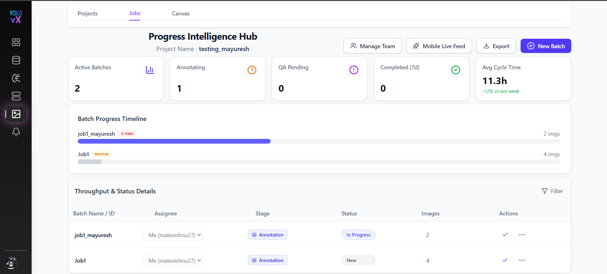
Top Navigation & Actions¶
At the top of the page, you will find the following controls:
-
Back – Returns to the Projects list.
-
Next – Navigate to the next section or workflow.
-
Manage Team – Onclick Manage Team a popup window appears where you can invite, update roles, remove, or assign team members to the project.
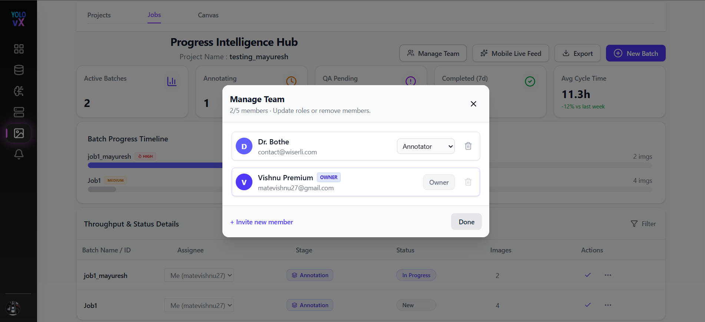
-
Mobile Live Feed – Onclick Mobile Live Feed button a Mobile Sync Pipeline popup window appears. This feature allows users to connect the YOLOvX mobile application to the selected project by scanning a unique QR code.
After scanning the QR code using the YOLOvX mobile app:
- The mobile device is securely linked to the current project.
- Images captured from the mobile application are automatically streamed to the platform.
- A new batch is automatically created for the incoming images.
- Captured images become immediately available for annotation.
The Mobile Sync Pipeline popup includes: - QR Code for device pairing. - Connection instructions. - Target Session Endpoint used to identify the active project session.
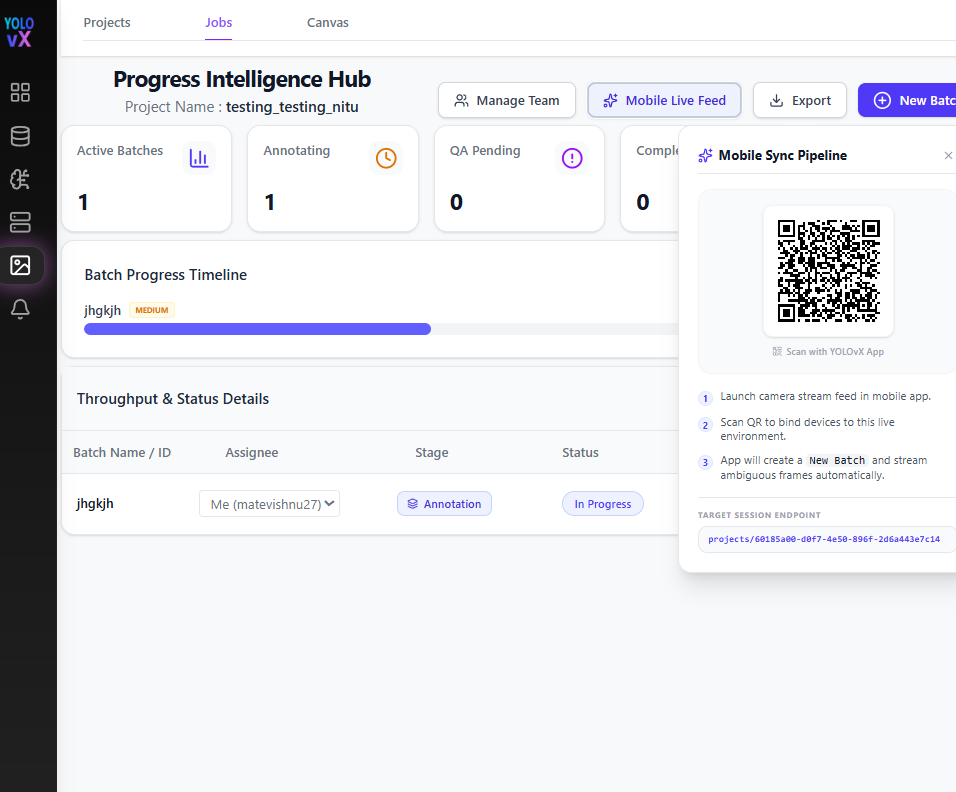
-
Export – Onclick Export button a popup window appears where you can Download project annotation by choosing the export format, if you want you can include images in the export, add a export dataset name and choose the export destination. Then click on export button will download all the annotations data of that project.
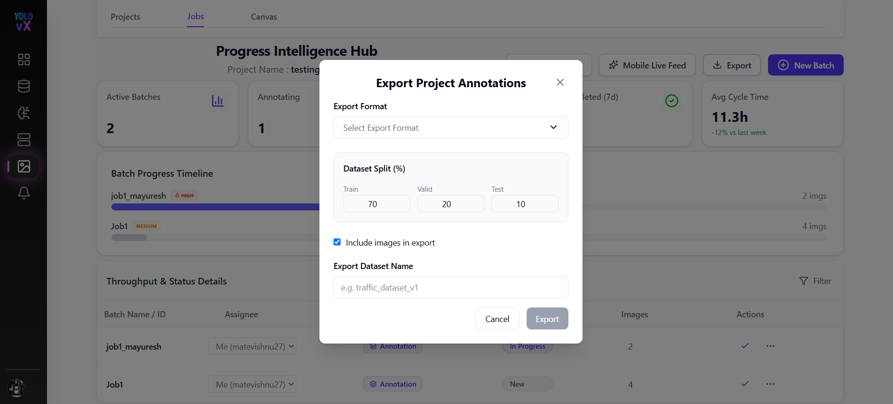
-
New Batch – Onclick New Batch button a popup window appears where you can create a new job batch by entering the job name, description for that job, priority and by uploading images within the project.
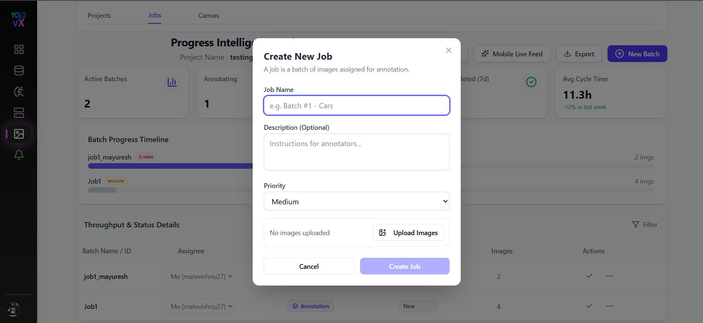
Project Summary Metrics¶
Below the header, summary cards display real-time project statistics:
- Active Batches – Number of batches currently active.
- Annotating – State of batches currently under annotation.
- QA Pending – Number of batches waiting for quality review.
- Completed (7d) – Number of batches completed in the last 7 days.
- Avg Cycle Time – Average time taken to complete a batch, with comparison to the previous week.
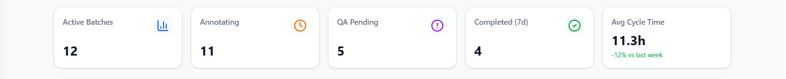
Batch Progress Timeline¶
The Batch Progress Timeline visually represents the progress of each batch using progress bars:
- The right side displays the total number of images in the batch.
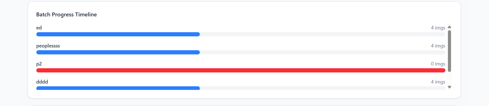
Throughput & Status Details Table¶
This table provides a detailed breakdown of all batches in the project.
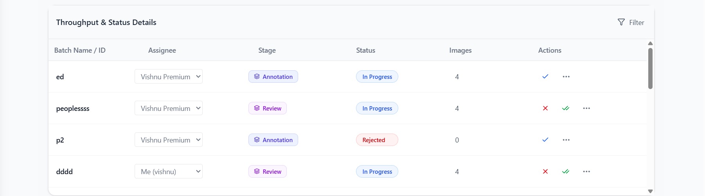
Table Columns¶
-
Batch Name / ID – Unique identifier for each batch.
-
Assignee – The team member responsible for the batch. This can be changed using the dropdown.
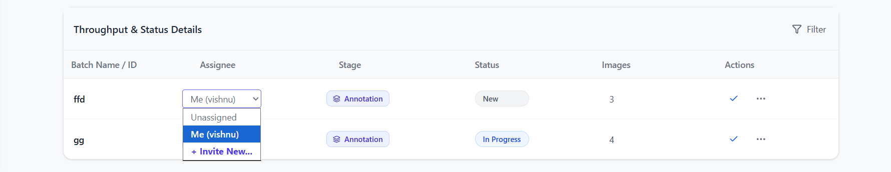
-
Stage – Current workflow stage (e.g., Annotation).
-
Status – Current state of the batch (e.g., New, In Progress).
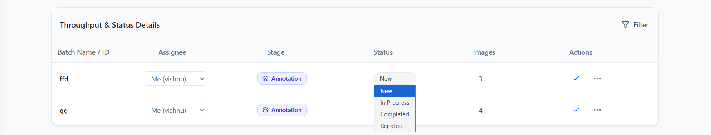
-
Images – Number of images in the batch.
-
Actions – Onclick Actions dots a dropdown appears where you can Edit Job, Upload images and delete Job.
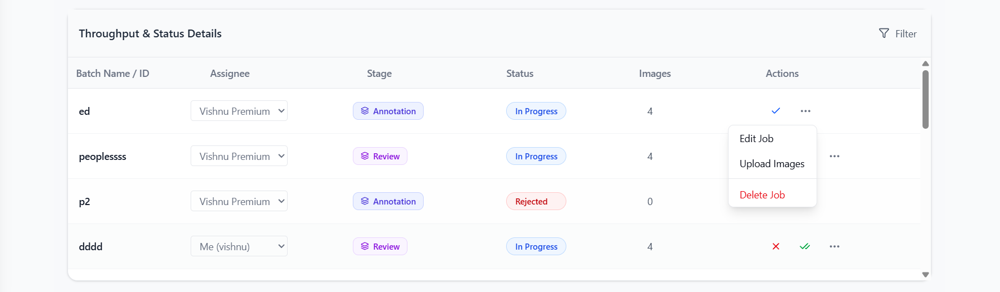
Batch Status Actions¶
Each batch row provides action controls:
-
In Progress / Completed/ Rejected – Mark the batch as completed or move it to the next workflow stage.
-
⋮ More Options Menu – Access additional actions such as editing batch details, uploading images, or deleting the batch.
-
Edit Job - Onclick Edit Job a popup window appears where you can edit job name, description, and add more images or delete any existing images. Click on save changes will save these changes.
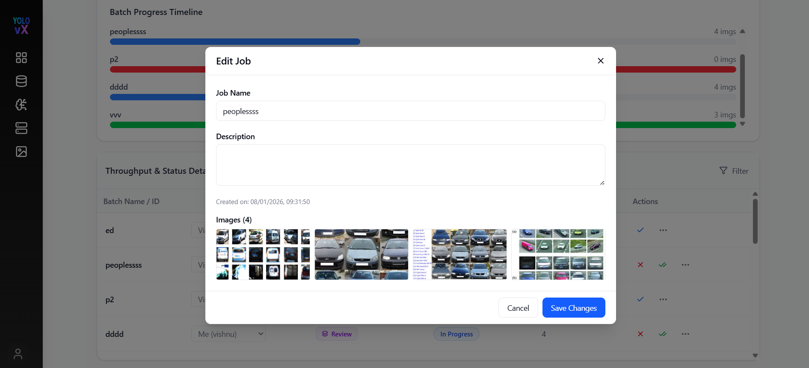
-
Add Images - Onclick upload images a popup window appears where you can Import Images by selecting any files in jpg, png or webp format.
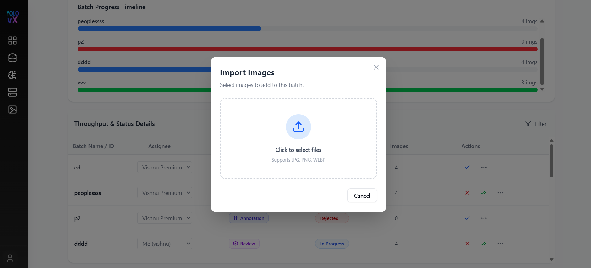
-
Clear Annotations - Onclick clear annotations a popup window appears where we can clear all the annotations of that Batch.
-
Delete Job - Onclick upload images a popup window appears where you can delet that Job permanently by clicking on delete button.
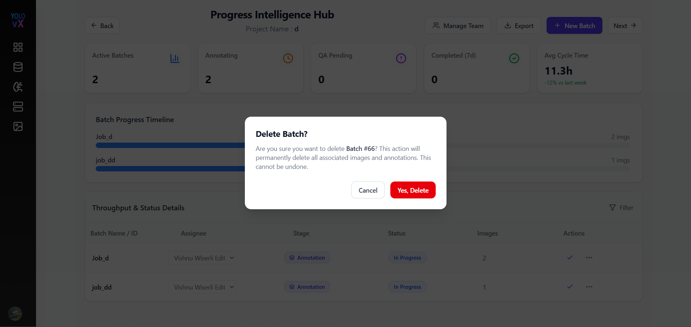
Filtering & Sorting¶
- Filter Icon – Filter batches based on Batch name, assignee, status, stage, or images count.
- Sorting options allow you to organize batches for easier management.
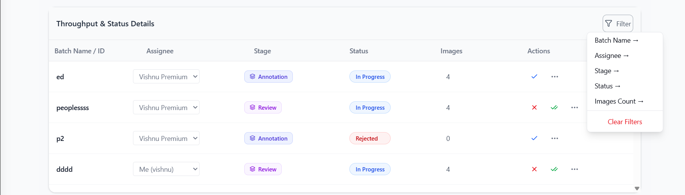